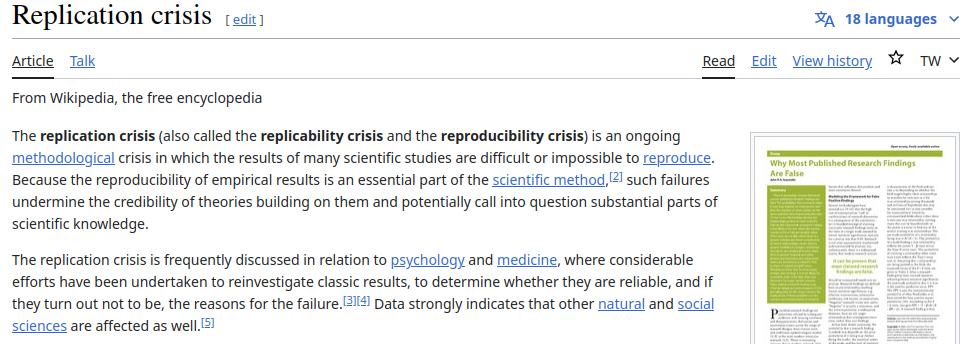
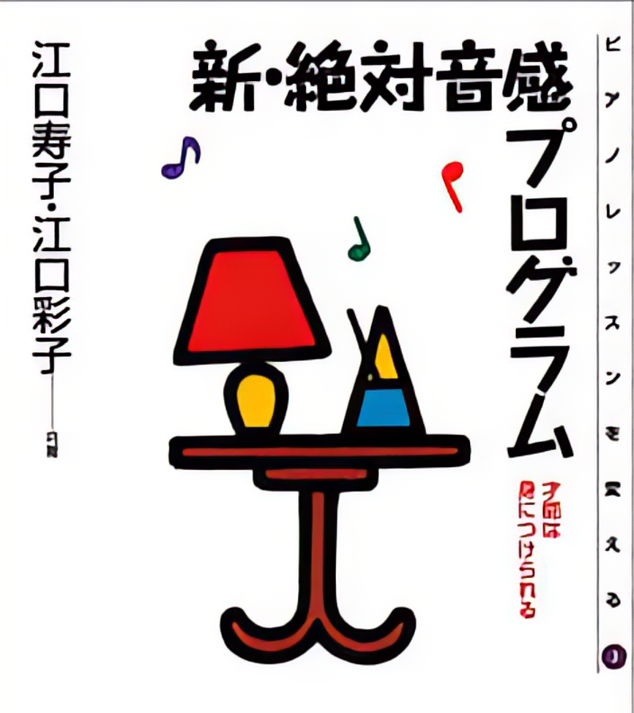
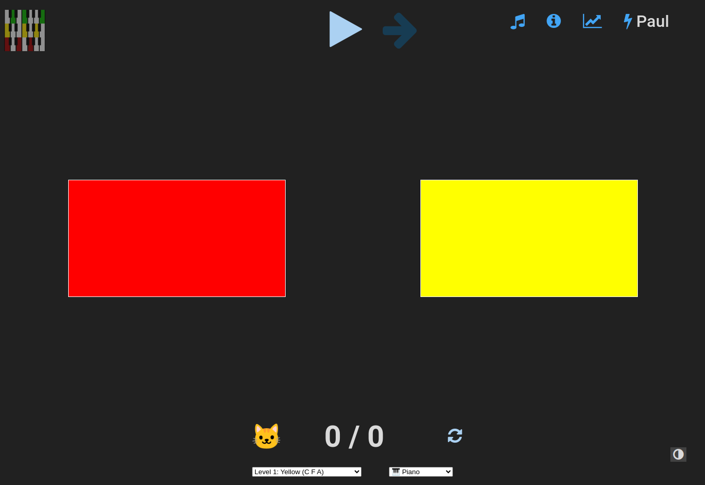
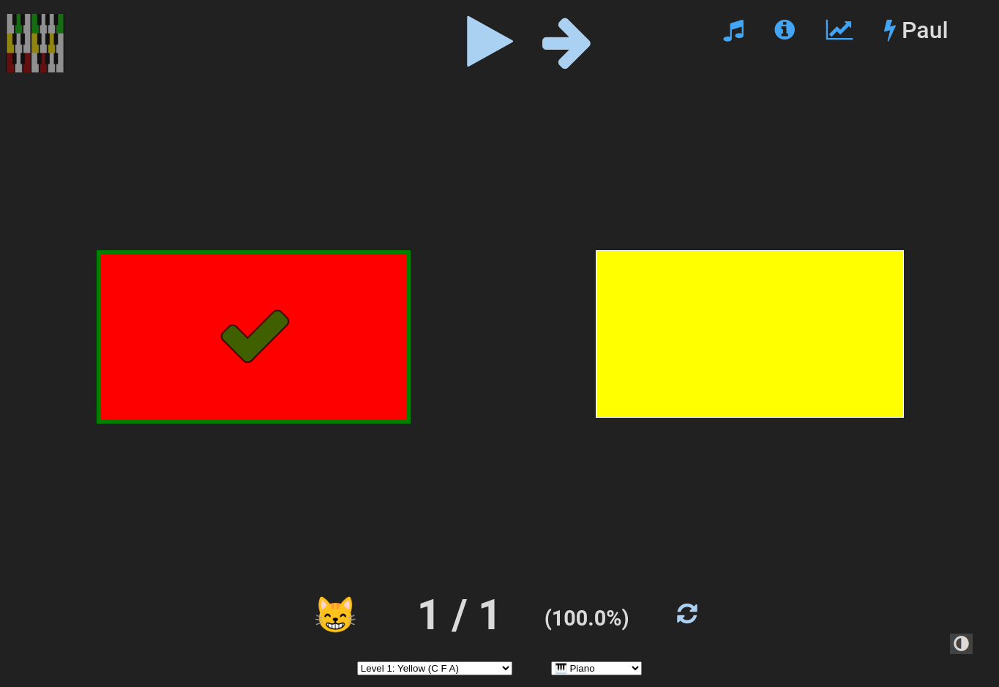
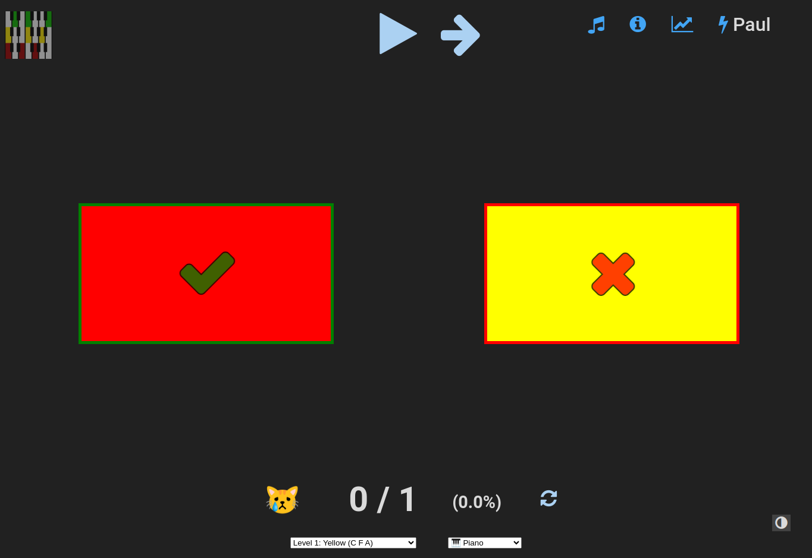
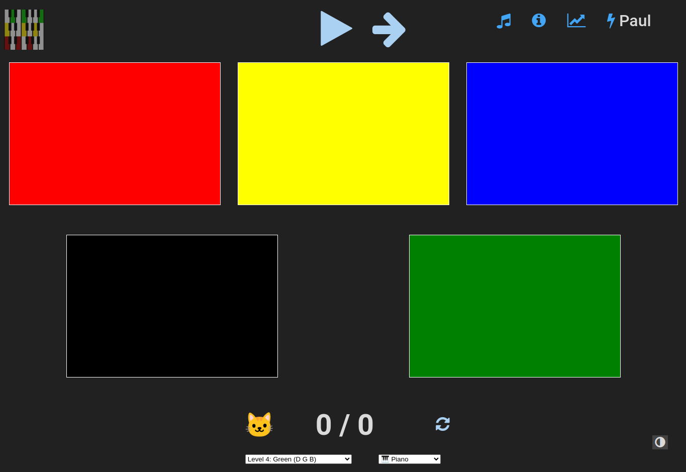
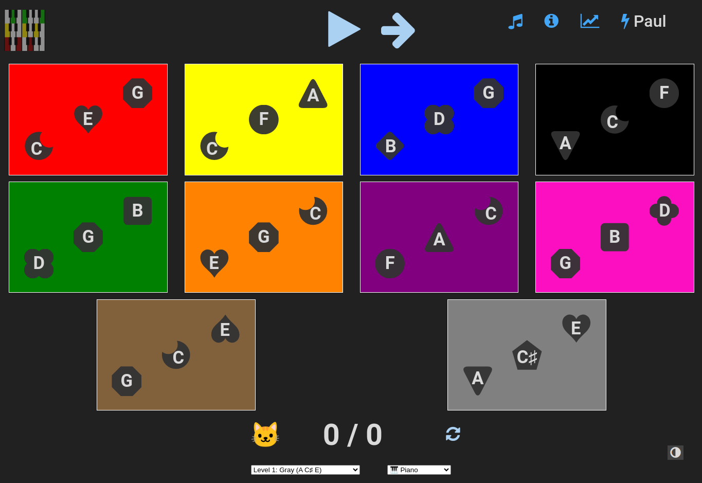
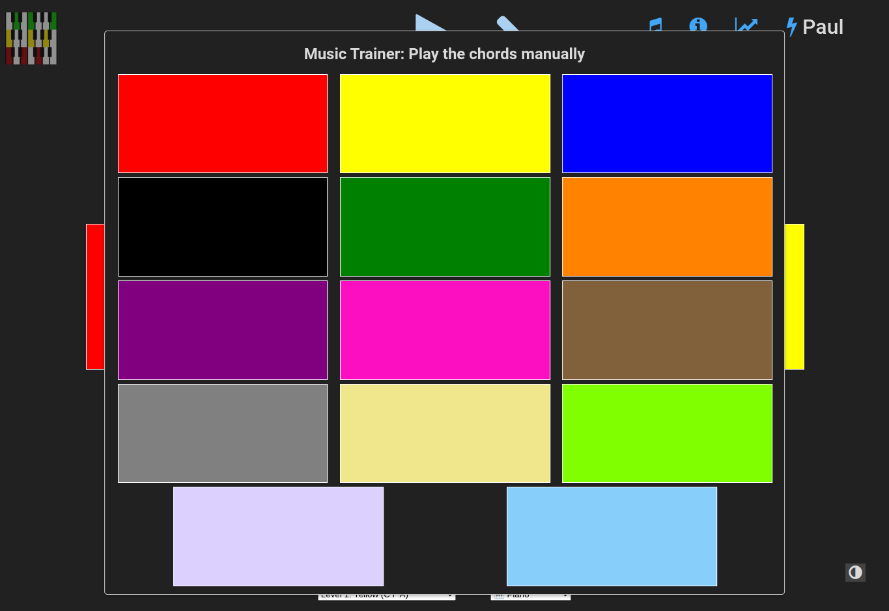
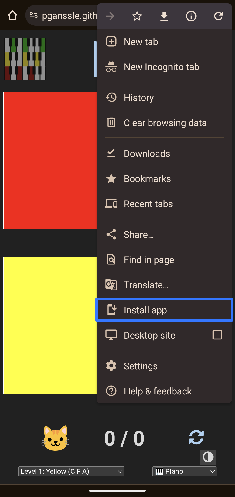
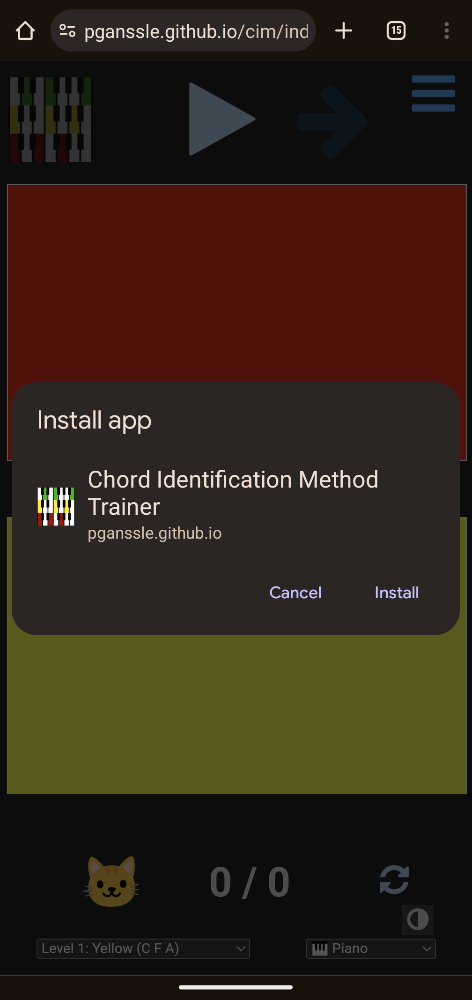

<h1 style="font-size: 3em; line-height: 2">Teaching Children Perfect Pitch</h1> <br/> <br/> <span style="font-size: 2.5em"> Paul Ganssle </span> <br/> <br/> <img src="images/pganssle-logos.svg" height="40px" alt="@pganssle"> <br/> <br/> <span style="font-size: 1em;"><em>This talk on Github: <a href="https://github.com/pganssle-talks/chord-trainer">pganssle-talks/chord-trainer</a></em> </span> <br/> <a rel="license" href="https://creativecommons.org/publicdomain/zero/1.0/"> <img src="external-images/logos/cc-zero.svg" height="45px"> </a> <br/> Notes: Good morning! I'm Paul Ganssle, and today I'd like to talk to you about my application that uses a chord identification method to try to help children acquire absolute pitch.
# Relative and Absolute Pitch Notes: OK, so if you don't know, absolute pitch or perfect pitch is basically the ability to hear a note and know what note it is without reference to another pitch. Most people have relative pitch, where we can only tell if one note is higher than another, but not what they are absolutely. My understanding is that people with absolute pitch experience sound the way most of us experience color — if you only had 'relative color', you couldn't look at an object and determine that it is red, but you'd be able to know if it is more or less red than another object. -- # Teaching Absolute Pitch to Children <!-- alt="A screenshot of the abstract of a paper in Psychology of Music from 2012. The title is: A longitudinal study of the process of acquiring absolute pitch: A practical report of training with the ‘chord identification method’ The author is Ayako Sakakibara from the Ichionkai Music School, Tokyo, Japan The abstract is: The purpose of this study was to investigate longitudinally the process of acquiring absolute pitch (AP). Twenty-four young children (aged 2 to 6 years) without AP were trained to acquire AP using Eguchi’s (1991) Chord Identification Method (CIM). All children were able to acquire AP (except two who ceased training). Results suggest that, at a minimum, children younger than 6 years old are capable of acquiring AP through intentional training. Furthermore, children’s errors observed during training suggested the transition of different strategies relying respectively on tone height and tone chroma. Initially, children identified chords using a strategy depending primarily on tone height, then gradually they began to attend to tone chroma to identify chords and this process ultimately led to acquisition of AP."> --> Notes: I always thought it would be cool to have perfect pitch, but I had been under the impression that it was not something you could learn — either your brain processes sound this way or it doesn't. But then I came across a paper from 2012 claiming that with enough training, it is possible to acquire absolute pitch in childhood. It comes from a school in Japan called the Ichionkai Music School, and they claim to have a 90% success rate using their method to train children between ages 2 and 6, and conveniently they lay out the method in the paper. -- ## Reasons for Skepticism - Baseline credence for psychology research should be extremely low - Study was performed by the Ichionkai Music School - The dropout rate was ridiculously low for this method <br/> <br/> <div class="fragment disappearing-fragment nospace-fragment fade-out" data-fragment-index="0">  </div> <div class="fragment disappearing-fragment nospace-fragment fade-in-and-out" data-fragment-index="0"> <blockquote style="border: 1px solid black"> <b>Twenty-two participants out of 24</b> were able to conduct the amount of daily practice needed for the chord identification method, 4–5 sessions a day, almost every day throughout the period of the training. Two participants stopped the training for personal reasons unrelated to the current project. <b>The remaining 22 participants who continued the training were able to acquire AP.</b> </blockquote> </div> <div class="fragment appear" style="margin-top:2em" data-fragment-index="1"> ## Reasons to Try Anyway - Probably no one is really trying to teach kids perfect pitch - Critical period effects are probably real - Total time commitment isn't high (though distributed in an annoying way) - ~75-150 hours over 1-2 years - It can be a bonding experience </div> Notes: There are some reasons to be skeptical of these claims. For one thing, after the advent of the reproducibility crisis — which I strongly suggest you look up if you don't already know about it — we should probably be pretty skeptical of *any* studies, much less non-preregistered accounts coming from a music school that sells books teaching the method. - To me, though, the fishiest thing about the study is the dropout rate; this method, as you will soon see, involves quizzing 2-6 year olds *five times a day* for *several years*. I imagine anyone who has tried to get a 2-6 year old to do *anything* will find this extremely suspicious — it seems unlikely to me that I could perform a study where 90% of participants consistently get children to brush their teeth twice a day, so I suspect some sort of selection bias is at work here. - That said, I don't think there's been a ton of research either way, and critical effects *probably* are real, and I felt that the investment of time wasn't so high that it might not be worth trying out. Plus it actually has turned out to be a fun bonding experience between my son and I.
# Eguchi's Method <figure>  <figcaption><i>New Absolute Pitch Program by Hisako Eguchi and Ayako Eguchi</i></figcaption> </figure> <br/> <ul> <li>Chords associated with colored flags</li> <li class="fragment fade-in" data-fragment-index="0">Child must be able to identify each chord with 100% accuracy</li> <li class="fragment fade-in" data-fragment-index="1">New chords are introduced every 2 weeks</li> <li class="fragment fade-in" data-fragment-index="2">Do 25 identifications per session, <u>5 sessions per day</u></li> <li class="fragment fade-in" data-fragment-index="4">When all chords are learned, scale back sessions to maintain 100% accuracy, continue until aged 9</li> Notes: Which brings us to the method. Basically it works by taking a number of chords and associating them with colored flags. You introduce the chords to the child one at a time, quizzing them on the chords until they can get the answer correct 100% of the time — with a minimum of two weeks between introducing new chords. You do 5 sessions a day, and each session is about 25 identifications. When the child has mastered all the chords, they can scale back the training sessions to maybe once per week — as long as they continue to do it perfectly. OK, so you want to do the method, presumably you have a piano you can play, and you can generate random sequences of chords in your head. Oh and remember we're doing this 5 times a day, so hopefully you don't like going too far away from your house, or your piano is very portable. -- <!-- .slide: data-visibility="hidden" --> <style> table.chord-chart td { text-align: center; } td.keyboard img { width: 20dvw; } td.chord-notes { width: 7.5dvw; text-align:center; } td.chord-color { width: 5 dvw; } td.chord-name { width: 7.5 dvw; } td.left-border { border-left: 1px solid black; } </style> # White Chords <br/> <table class="chord-chart"> <tr> <td class="chord-notes fragment custom outline" data-fragment-index="0">C E G</td> <td class="chord-color">Red</td> <td class="chord-name">C</td> <td class="keyboard"> <img src="images/color_keyboard/red.svg"> </td> <td class="chord-notes left-border">C F A</td> <td class="chord-color">Yellow</td> <td class="chord-name">F/C</td> <td class="keyboard"> </td> </tr> <tr> <td class="chord-notes">B D G</td> <td class="chord-color">Blue</td> <td class="chord-name">G/B</td> <td class="keyboard"> <img src="images/color_keyboard/blue.svg"> </td> <td class="chord-notes left-border">A C F</td> <td class="chord-color">Black</td> <td class="chord-name">F/A</td> <td class="keyboard"> </td> </tr> <tr> <td class="chord-notes">D G B</td> <td class="chord-color">Green</td> <td class="chord-name">G/D</td> <td class="keyboard"> </td> <td class="chord-notes left-border fragment custom outline" data-fragment-index="0">E G C</td> <td class="chord-color">Orange</td> <td class="chord-name">C/E</td> <td class="keyboard"> </td> </tr> <tr> <td class="chord-notes">F A C</td> <td class="chord-color">Purple</td> <td class="chord-name">F</td> <td class="keyboard"> </td> <td class="chord-notes left-border">G B D</td> <td class="chord-color">Pink</td> <td class="chord-name">G</td> <td class="keyboard"> </td> </tr> <tr colwidth="6"> <table class="chord-chart"> <tr> <td class="chord-notes fragment custom outline" data-fragment-index="0">G C E</td> <td class="chord-color">Brown</td> <td class="chord-name">C/G</td> <td class="keyboard"> </td> </tr> </table> </tr> </table> Notes: The chords are split into two groups, the white key chords and the black key chords. The first 9 chords are all white key chords, and you'll notice a lot of repetition here — for example red, orange and brown are all made up of E, G, and C. Basically, these are 3 chords - C, F and G, and the two "inversions" of those chords — where you move the root of the chord to one other than the nominal note. For these chords, you are supposed to only use colors and not refer to the note names or the names of the chords. -- <!-- .slide: data-visibility="hidden" --> # Black Chords <br/> <table class="chord-chart"> <tr> <td class="chord-notes">A C♯ E</td> <td class="chord-color">Gray</td> <td class="chord-name">A</td> <td class="keyboard"> </td> <td colspan="3" rowspan="6" style="border:none; width:32.5dvw"> <ul> <li>Can test individual "white note" identification</li> <li class="fragment appear">Switch to calling out note names (C-E-G, A-C♯-E, etc)</li> <li class="fragment appear">Can introduce inversions if having trouble (C♯-E-A, F-D-B♭)</li> </ul> </td> </tr> <tr> <td class="chord-notes">D F♯ A</td> <td class="chord-color">Tan</td> <td class="chord-name">D</td> <td class="keyboard"> </td> <tr> <tr> <td class="chord-notes">E G♯ B</td> <td class="chord-color">Light Green</td> <td class="chord-name">E</td> <td class="keyboard"> </td> </tr> <tr> <td class="chord-notes">B♭ D F</td> <td class="chord-color">Light Purple</td> <td class="chord-name">B♭</td> <td class="keyboard"> </td> </tr> <tr> <td class="chord-notes">E♭ G B♭</td> <td class="chord-color">Sky Blue</td> <td class="chord-name">E♭</td> <td class="keyboard"> <img src="images/color_keyboard/skyblue.svg"> </td> </tr> </table> Notes: After the child has mastered the white key chords, according to the book they should be able to perfectly pick out the individual "white key" notes in that range. This is also the point at which you start introducing the names for individual notes, so they stop calling out "red" and start calling out "C-E-G". You'll note that this list of chords doesn't include any inversions — the method suggests starting with these 5 and only introducing inversions if the child is having trouble mastering these chords.
<div class="fragment disappearing-fragment fade-out" data-fragment-index="0">  </div> <div class="fragment disappearing-fragment fade-in-and-out" data-fragment-index="0">  </div> <div class="fragment disappearing-fragment fade-in-and-out" data-fragment-index="1">  </div> <div class="fragment disappearing-fragment fade-in-and-out" data-fragment-index="2">  </div> <div class="fragment disappearing-fragment fade-in" data-fragment-index="3">  </div> <div class="fragment disappearing-fragment fade-in" data-fragment-index="4">  </div> Notes: No, of course we're not going to do any of that — this kind of thing is exactly what being a programmer is all about! So obviously I built an app! I threw together a quick HTML / Javascript / CSS single-page app, permissively-licensed open source, and published via github pages. Here is what it looks like, it's pretty simple: it displays the chords you are on, it will play one randomly, and you pick which one you think it is. If you get it right, the kitty is happy. If you get it wrong, the kitty is sad. When the child starts mastering chords. you can move on to the next level. There are 9 "white key" chords, and once they master all of those, you enter the "black key" phase, where they're supposed to start calling out the chords by name rather than color. -- <video src="videos/cim_how_to_clip.webm" style="height: 70dvh" controls type="video/webm"> Notes: So, let's see it in action! -- <!-- .slide: data-visibility="hidden" --> <div style="display: flex; flex-direction: rows; align-items: center; justify-content:space-around; height: 80dvh">   Notes: Additionally, I found out that when you have a simple single page application like this, it's fairly easy to turn it into a "progressive web app", so actually if you open it on your phone or tablet in a browser, you can click "install this app", and it will actually install it like a native application.
<figure> <figcaption style="font-size: 1.5em"> <a href="https://pganssle.github.io/cim">https://pganssle.github.io/cim</a> </figcaption> </figure> <em>Can you help?</em> - More users - Help with documentation - Code contributions - JP → English Translation Notes: So, that is my talk, here's a link to the application, and if you're interested I'd love to have more users or contributors. We could use help with documentation, with code, or also if you are interested in translating parts of a book from Japanese to English, please get in touch!